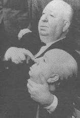
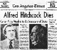

|
Hitchcock, la légende du suspense |
|

|
 La fin, goodby maestro... La dernière réalisation d'Hitchcock, Complot
de famille, en 1976 ne fut pas un grand succès. Hitchcock était
conscient que les quelques louanges qu'il recevait de la presse spécialisée
était plus dues au respect d'un monument de 76 ans du cinéma qu'à la qualité
réelle de son film. De ce fait, Hitchcock ne tarda pas à se sentir misérable.
François Truffaut qui tournait à
l'époque L'homme qui aimait les femmes reçut une lettre datée du 20
octobre 1976 :
Deux mois plus tard, il annonça pourtant au même Truffaut qu'il avait trouvé le sujet de sons 54 ème film. Il s'agissait de l'adaptation d'un roman d'espionnage de Ronald Kirkbride intitulé The short night. L'entourage d'Alfred Hitchcock était pourtant très sceptique quant à l'avenir du film. Alma avait subi une attaque lors du tournage de Frenzy et était devenue impotente, Hitchcock lui-même souffrait d'arthrite et se déplaçait de plus en plus difficilement. En 1979, une soirée d'hommage organisée par l'American Film Institute lui fut consacrée sous le nom de Live Achievement Award, titre à la fois pompeux et macabre. La soirée fut à la hauteur des pires craintes que l'on pouvait avoir. Elle fut présidée par Ingrid Bergman, elle même gravement atteinte d'un cancer. Tout le monde fut bouleversé de voir Alma et Alfred Hitchcock en si mauvais était. Ingrid Bergman eut cette remarque:
Comme le dit François Truffaut :
Les mois qui suivirent cette cérémonie confirmèrent l'état de délabrement
alarmant de ce qui fut le maître du suspense. Hitchcock se rendait à son
bureau mais n'y faisait pas grand chose mis à part boire d'énormes quantités
de vodka et de cognac. Il ne recevait presque personne mis à part David
Freeman auquel il racontait inlassablement ses souvenirs d'enfant et
de débutant au cinéma. A partir d'avril 1979, l'ambiance au bureau d'Hitchcock
se dégrada de manière dramatique, et sa secrétaire Suzanne Gauthier
avait de plus en plus de mal à supporter les accès de sénilité, de fureur
et les obscènités que lui faisait supporter le réalisateur.
A noël 1979, la reine d'Angleterre le nomma "grand chevalier de l'empire
britannique" et lui accorda le titre de Sir Alfred Hitchcock. Il fit
sa dernière apparition publique le 16 mars 1980 puis rédigea son testament et
ne vit plus que sa fille Patricia jusqu'à sa mort
le 29 avril 1980 à 9 heure 17. Le suspense était tombé...définitivement !
|